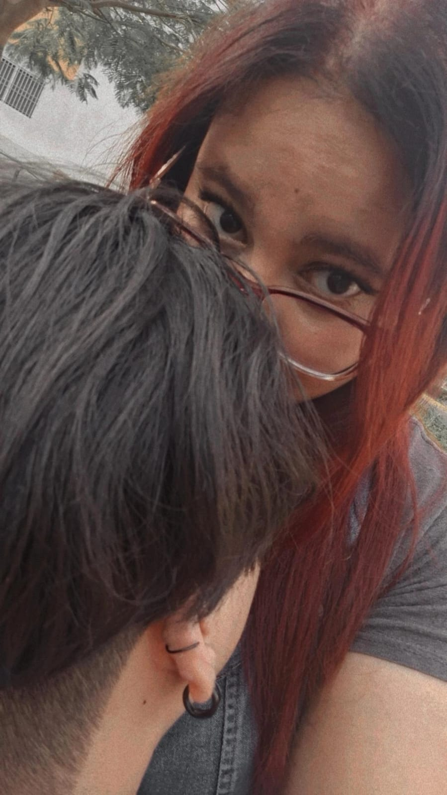
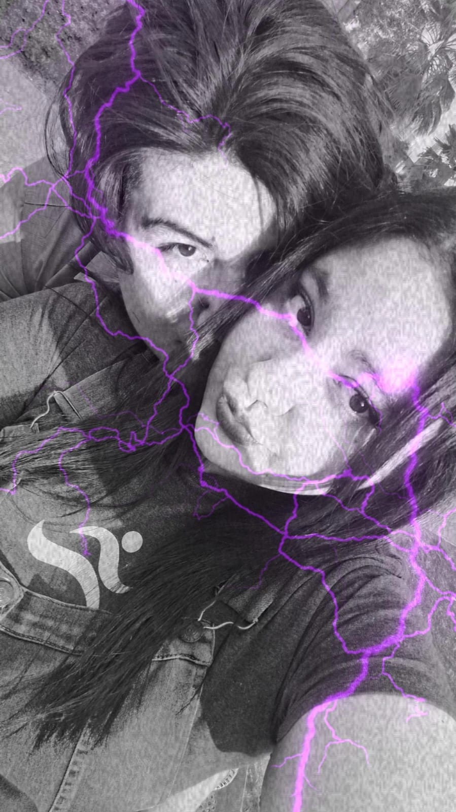

Gracias por los 6 meses üíú,
Andy, mi amor todav√≠a y mi chiquitaüíñ, sabes que pese a todo de verdad hay tantos sentimientos que siento por ti, no te imaginas
la felicidad que tuve gracias a esto hermoso que tuvimos y espero continúe. Sé que quizás no logré ser la mejor persona
para sobrellevar todas estas experiencias nuevas que me diste, pero te prometo que no solo estoy mejorando por mí,
sino también para saber llevar esto de la mejor manera posible y hacer que esto genuinamente se mantenga. De verdad prometo
ser aquel que te dé una comodidad bastante buena para que te quieras quedar conmigo. Créeme que jamás haría que te arrepientas de esto
y ser realmente un mejor adulto que necesito ser y que tú mereces üíñ